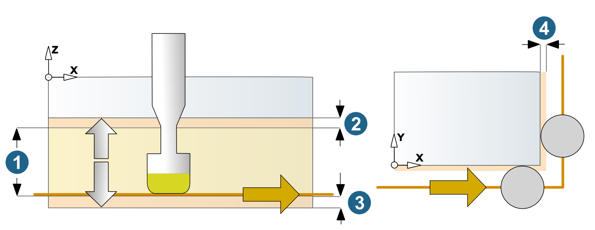
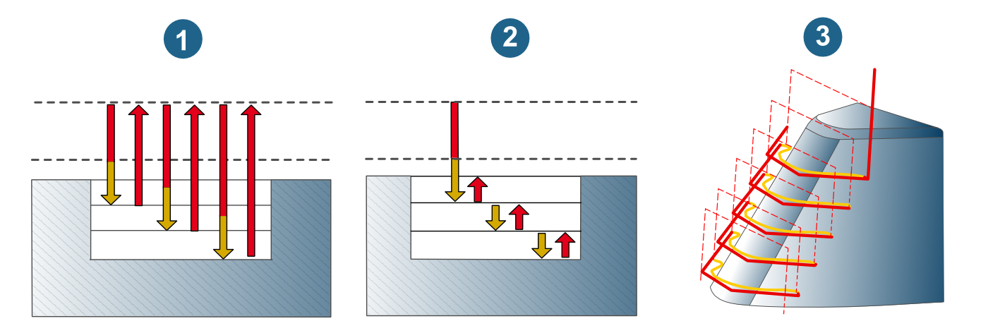
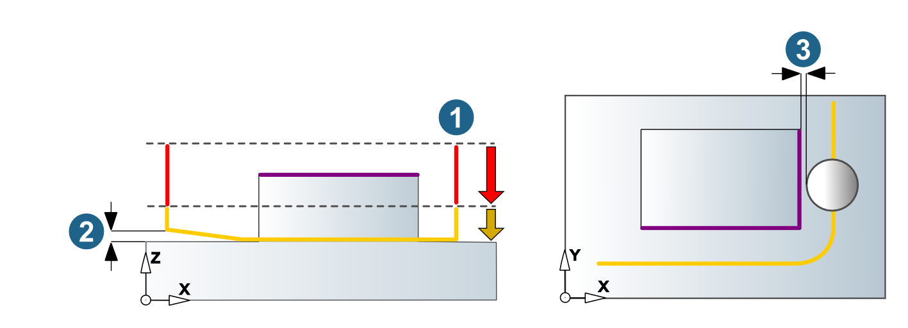

Parameters
Path compensation
Center path: hyperMILL calculates a toolpath that can be machined using the specified tool without collisions. Stock allowances in XY are taken into account.
Select this function if your controller does not offer the path compensation feature.
Note
The tool diameters must be adhered to exactly during machining. If tool diameters vary, the NC program has to be corrected.
(1) Contour (selected in hyperMILL).
(2) Center path (calculated by hyperMILL) corresponds to NC path.
 |
Compensated path: hyperMILL calculates a toolpath that can be machined using the specified tool without collisions. Stock allowances in XY are taken into account.
(1) Contour (selected in hyperMILL) corresponds to NC path.
(2) Center path (calculated by hyperMILL).
(3) Center path (calculated by NC control with real tool diameter).
hyperMILL tool: D8 / R4
Real tool: D7.5 / R3.75
Tool data storage: D7.5 / R3.75
 |
Max. compensation value: The NC control can be corrected up to the defined value. Default = Tool radius * 0.01 or Nominal diameter * 0.01 (for chamfer cutters).
Compensated center path: Only available if enabled for the job list on the Setup dialog page. hyperMILL calculates a toolpath that can be machined using the specified tool without collisions, including the path compensation.
(1) Contour (selected in hyperMILL)
(2) Center path (calculated by hyperMILL) corresponds to NC path
(3) Center path (calculated by NC control with real tool diameter)
hyperMILL tool: D8 / R4
Real tool: D7.5 / R3.75
Tool data storage: D-0.5 / R-0.25
 |
Allowance
Choose Allowance XY (1) and Allowance Z (2). Remaining material that is to be removed in subsequent fine machining. Corresponds to the distance from the final contour that the cutter has to keep
 |
Vertical stepdown, horizontal stepover factor
Fixed step: The value for the vertical stepdown/lateral infeed is maintained.
Infeed
Vertical stepdown (1): Define the infeed in the Z direction of the job frame. In stroke grinding, this corresponds to the length of the stroke movement.
To ensure a uniform wear on the grinding tool during the grinding process, extend the vertical stepdown upwards using the Overlap top (2) tool technology parameter and downwards using the Overlap bottom (3) tool technology parameter. The grinding bit then moves by the defined value in the axial positive direction and in the axial negative direction beyond the Vertical stepdown (1).
Lateral infeed area
Total infeed (4): Use the total infeed (= lateral infeed) to define the stock thickness that is removed by the grinding process.
|  |
Additional options
Spring path: for closed contours, an additional finish pass is performed for each Z level, which removes fine machining cavities, thus increasing the surface quality. Define the number of empty cuts to be performed using Pass number.
Retract mode
Clearance plane (1): all vertical retract and stepdown movements to the next machining plane take place via the clearance plane.
Clearance plane (2): all vertical retract and stepdown movements to the next machining plane take place via the clearance plane.
Production mode: Rapid tool movements occur as the shortest link between the infeed planes, while taking into account a possibly defined allowance. This minimizes the number of empty paths. If a direct lateral link is not possible, a collision-free polygonal movement is made.
|  |
Clearance
Clearance plane (1): Plane for rapid tool movements.
Side clearance: Minimum distance in lateral direction from the surface of the model.
Side clearance: Minimum distance in lateral direction from the surface of the model.
|  |